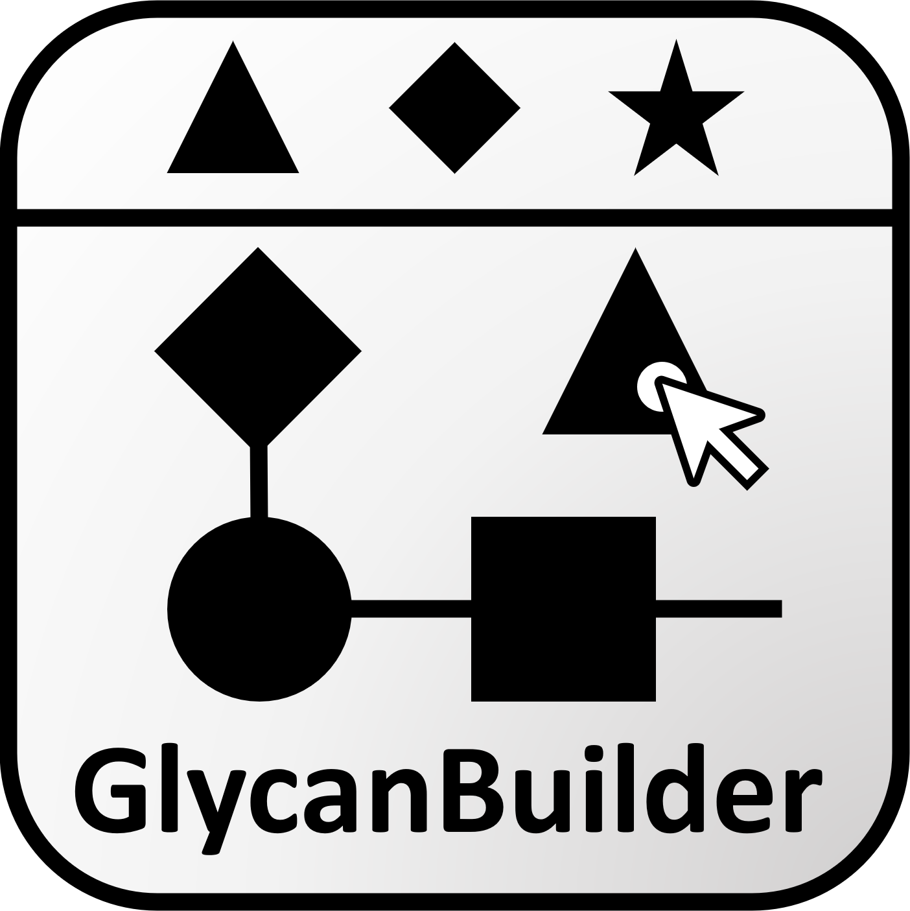

GlycanBuilder2
version: ${project.version}

GlycanBuilder2 can draw a wide variety of glycans using
SNFG
symbols. Moreover, it can easily output glycan images and
WURCS
and GlycoCT sequences.
contact: glyconavi@noguchi.or.jp
Citation:
Shinichiro Tsuchiya, et. al.,
Carbohydrate Research
, 445,
2017
, Pages 104-116